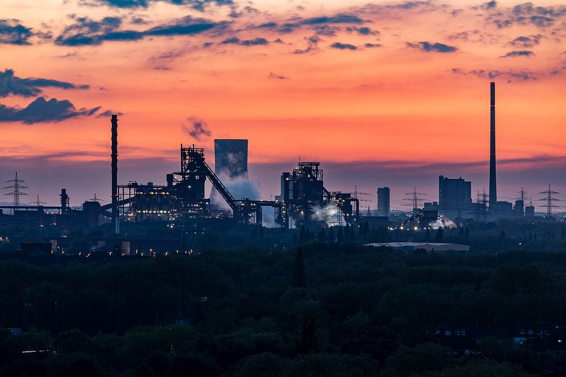
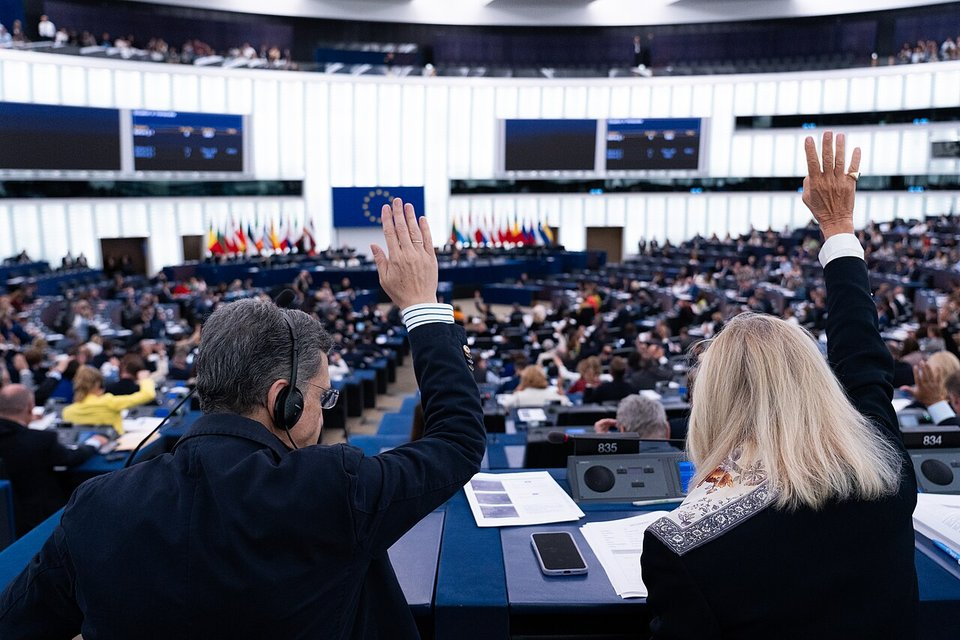
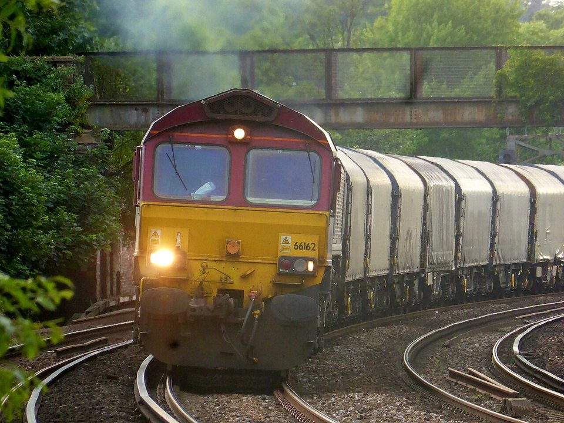

CARBON NEUTRALITY · EU CBAM · 101
CBAM 一次看懂：歐盟碳邊境調整機制的由來、規則與時程
鋼鐵潮流工作室 · 發布 2026.10.06

本期重點
CBAM（Carbon Border Adjustment Mechanism，碳邊境調整機制）是歐盟對進口的鋼鐵、鋁、水泥、肥料、電力與氫，依產品生產過程的碳排放收取費用的制度。它在 2023 年 10 月起以「只申報、不繳費」試行，2026 年 1 月 1 日進入正式期；2027 年 2 月起，歐盟進口商要為 2026 年的進口量購買 CBAM 憑證，價格與歐盟碳市場連動，2026 年第三季為每噸 82.32 歐元。
- 為什麼要做：防止「碳洩漏」，也就是歐盟產業因碳價外移，或被碳成本較低的進口品取代。
- 怎麼收：進口商依產品的「隱含碳排放」購買憑證；原產國已實際支付的碳價可以扣除。
- 收多少：和歐盟鋼廠的免費配額同步退場，2026 年應付比例約 2.5%，逐年提高，2034 年全額計費。
- 對台灣：輸歐鋼品已在範圍內；台灣碳費能否抵扣、2028 年起是否擴及下游產品，是下一階段的重點。
關鍵數字
正式期起算2026.01.012023.10–2025.12 為過渡期，只申報
涵蓋產業6 大類鋼鐵、鋁、水泥、肥料、電力、氫
2026 Q3 憑證價格€82.32每噸 CO₂；Q1 €75.36、Q2 €75.28
豁免門檻每年 50 噸豁免約九成進口商，仍涵蓋約 99% 排放
首次購買憑證2027.02首次年度申報期限 2027.09.30
全額計費2034 年歐盟免費配額同步歸零
一、來源：為什麼會有 CBAM
歐盟自 2005 年起實施碳排放交易體系（EU ETS），鋼廠、水泥廠、電廠等排放大戶必須持有排放配額，配額可以在市場上買賣，形成碳價。碳價越高，歐盟產品的成本就越高，於是出現兩個風險：一是生產移到碳價較低的地區，二是歐盟市場被沒有碳成本的進口品取代。這兩種情況都會讓全球排放沒有減少，只是換了地方，稱為「碳洩漏」。
過去歐盟用「免費配額」保護這些產業，但免費發放等於減弱了減碳誘因。2019 年 12 月，歐盟在《歐洲綠色政綱》中提出碳邊境調整的構想；2021 年 7 月 14 日，執委會在「Fit for 55」氣候立法包中正式提案，與 EU ETS 改革一起推動：免費配額逐年退場，CBAM 同步接手防止碳洩漏的任務。
二、精神：讓進口品付同樣的碳價
- 碳價對等。 CBAM 不是一般關稅，而是把歐盟境內的碳價延伸到進口品：歐盟鋼廠每排一噸二氧化碳要付多少，進口鋼材的隱含排放就付多少。
- 已付可抵。 出口國若已實際支付碳價（碳稅、碳交易或碳費），可以從應購買的憑證中扣除，避免重複負擔。
- 與境內同步。 進口品的負擔隨歐盟產業免費配額退場的速度逐步增加，不會讓進口品比歐盟產品付得更多。
- 推動全球碳定價。 歐盟希望藉此鼓勵貿易夥伴建立自己的碳定價制度；這也是 CBAM 在世界貿易組織（WTO）層面最具爭議的地方，部分國家認為它是變相的貿易壁壘。

三、法規架構
| 法規 | 生效 | 重點 |
|---|---|---|
| CBAM 規則（EU）2023/956 | 2023.05.17 | 母法：涵蓋產品、隱含排放計算、憑證、申報人授權、罰則與過渡期 |
| ETS 指令修正（EU）2023/959 | 2023.06 | 歐盟產業免費配額自 2026 年起逐年削減，2034 年歸零，與 CBAM 同步 |
| 過渡期申報規則（EU）2023/1773 | 2023.08 | 2023.10–2025.12 每季申報隱含排放的格式與方法 |
| 簡化修正（EU）2025/2083 | 2025.10.20 | 改採每年 50 噸豁免門檻；憑證 2027 年 2 月開賣；年度申報延至次年 9 月 30 日 |
| 正式期執行規則（8 項） | 2025.12 | 預設值、查證、登錄系統、授權程序、憑證價格與免費配額扣減方法 |
| 下游產品擴大提案 COM(2025)989 | 審議中 | 新增約 180 項鋼鋁含量高的下游產品，並加入反規避條款，目標 2028 年實施 |
四、具體措施：進口商要做什麼
- 取得授權年進口量超過 50 噸者，須先成為「授權 CBAM 申報人」；2026 年 3 月 31 日前申請者可先行進口。
- 取得排放數據向海外工廠取得經第三方查證的實際排放；拿不到就用歐盟公布的預設值，可能偏高。
- 購買憑證在歐盟共同平台購買，價格依 EU ETS 拍賣均價：2026 年按季、2027 年起按週公布。
- 年度申報每年 9 月 30 日前申報前一年的進口量、隱含排放與可扣除的原產國碳價。
- 繳回憑證扣除免費配額對應量與已付碳價後，繳回相應數量的憑證；未依規定者罰款。
行政程序排放與義務憑證交易與申報
- 隱含排放怎麼算。 鋼鐵、鋁與氫只計生產過程的直接排放；水泥與肥料另計外購電力的間接排放。鋼鐵的間接排放仍須監測申報，但不必購買憑證。
- 預設值的代價。 若出口國沒有可靠數據，預設值取排放最高的十個出口國的平均，等於懲罰拿不出實際數據的供應商。
- 季末持有義務。 每季末帳戶內須持有當年度至今進口隱含排放（扣除免費配額後）50% 的憑證。
- 罰則。 未繳回足額憑證，比照 EU ETS 每噸 100 歐元（隨物價調整）的超額排放罰款；未經授權進口者，罰款為其 3 到 5 倍。
五、時程
- 2021.07執委會於 Fit for 55 提案
- 2023.05法規（EU）2023/956 生效
- 2023.10過渡期開始，每季只申報不繳費
- 2025.10簡化修正生效，50 噸門檻
- 2026.01正式期開始，進口即產生義務
- 2027.02憑證開賣，涵蓋 2026 年進口
- 2027.09首次年度申報與繳回
- 2034免費配額歸零，全額計費

六、對台灣鋼鐵業的意義
- 已經在範圍內。 鋼鐵是 CBAM 首批涵蓋產業，從鋼胚、鋼捲到部分螺絲、管件等鋼製品都要申報隱含排放。台灣輸歐鋼品的歐盟買家從 2026 年起就要計入 CBAM 成本。
- 數據就是競爭力。 能提供經查證的實際排放數據、排放又低於預設值的供應商，買家的 CBAM 成本較低。電爐鋼、高廢鋼比例或低碳製程的產品因此更有優勢。
- 碳費抵扣待確認。 台灣碳費一般費率每噸新台幣 300 元，約只有 CBAM 第一季憑證價格的九分之一；環境部持續與歐盟協商碳費能否抵扣，並爭取國內查驗機構獲得歐盟認可。
- 下游擴大的壓力。 若 2028 年納入約 180 項下游產品，機械、家電、汽車零組件等以鋼材為主的台灣出口品也可能被要求申報。
觀察重點
- 下游產品擴大提案在歐洲議會與理事會的審議進度，以及最終納入的產品清單。
- 台灣碳費能否被歐盟認可抵扣，以及國內查驗機構的認可進度。
- 2026 年第四季與 2027 年起每週公布的憑證價格走勢。
- 歐盟公布的國別預設值，對台灣鋼品是有利還是不利。
- 英國 CBAM 2027 年 1 月上路，以及英歐碳市場連結談判的結果。
延伸閱讀
- 歐盟鋼鐵新制：配額砍半、關稅 50%、追查熔鑄地，台灣怎麼應對
- 碳有價元年：台灣碳中和 2026 進度與鋼鐵業壓力
- 中鋼 IF 汽車用鋼 RC30：把三成廢鋼煉進汽車外板
- 世界鋼鐵數據：各國電爐鋼比例
資料來源
- Price of CBAM certificates（歐盟執委會稅務與關務總署）
- EU CBAM certificate price rises to €82.32 for Q3 2026（SteelOrbis，2026-10-06）
- European Commission publishes first CBAM certificate price（Fastmarkets，2026-04-07）
- EU adopts CBAM Omnibus Regulation（EY，2025-10-22）
- EU adopts CBAM simplification regulation: 10 key amendments（Mayer Brown，2025-10-17）
- EU CBAM financial obligations commence amid proposed scope expansion（Akin Gump）
- CBAM: extension to downstream products（歐洲議會研究服務處，2026-07）
- Why do importers pay only 2.5 per cent of CBAM emissions in 2026?（GreenSutra）
- Does CBAM count indirect electricity emissions for steel?（GreenSutra）
- Commission adopts detailed reporting rules for the CBAM's transitional phase（歐盟執委會，2023-08-17）
- The new UK Carbon Border Adjustment Mechanism（Jones Day，2026-06）
- EU Carbon Border Adjustment Mechanism（Wikipedia）
- 歐盟 CBAM 碳價抵扣規定（RECCESSARY）
- 歐盟 CBAM 最新進展與台版 CBAM（RECCESSARY）
內容僅供產業資訊參考，不構成法律或投資建議；CBAM 實際義務以歐盟公告的法規與執行規則為準。新聞版權屬原出處所有。